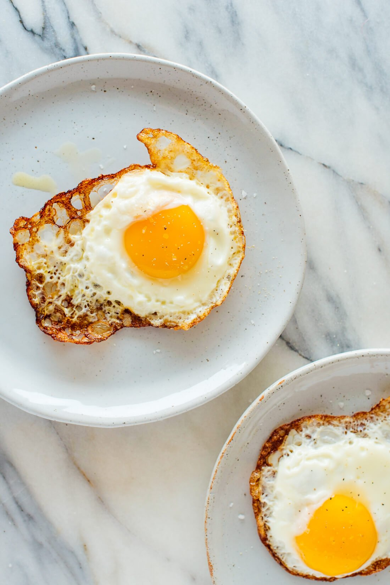

Fried Egg

Description
So good, even chickens eat them
Ingredients
1 tablespoon extra-virgin olive oil
1 egg
Instructions
add 2 tbsp. olive oil in pan over medium heat
crack egg into pan
allow egg to cook, gently tipping pan to redistribute oil until egg edges are crispy and yolk is cooked as desired.
transfer egg to plate
back Home